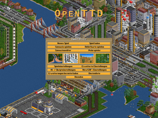
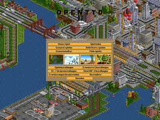

OpenTTD
Dieser Artikel wurde für die folgenden Ubuntu-Versionen getestet:
Ubuntu 16.04 Xenial Xerus
Zum Verständnis dieses Artikels sind folgende Seiten hilfreich:
Das Spiel Transport Tycoon Deluxe (kurz TTD) von 1994 zählt zu den bekanntesten Wirtschafts- und Aufbaustrategie-Spielen. Seit 2004 existiert das Projekt OpenTTD  , ein Klon, welcher einige nützliche und bisher vermisste Funktionen hinzufügt. Er wird ständig weiterentwickelt, zudem ist OpenTTD komplett in Deutsch spielbar.
, ein Klon, welcher einige nützliche und bisher vermisste Funktionen hinzufügt. Er wird ständig weiterentwickelt, zudem ist OpenTTD komplett in Deutsch spielbar.
|  |
| Startmenü mit OpenGFX |
|  |
| Startmenü mit Originalgrafiken |
Installation¶
Ubuntu-Paketquellen¶
OpenTTD befindet sich in den Ubuntu-Quellen und lässt sich bequem über die Paketverwaltung installieren [1]:
openttd (multiverse[2])
 mit apturl
mit apturl
Paketliste zum Kopieren:
sudo apt-get install openttd
sudo aptitude install openttd
Manuelle Installation¶
Hinweis!
Fremdpakete können das System gefährden.
Die Installation ist relativ einfach, da man auf der Downloadseite ein DEB-Paket für aktuelle Ubuntu-Versionen herunterladen kann, das man nur manuell installieren [2] muss. Neben der Stable-Version gibt es auch die Entwicklerversion (trunk) , die täglich aktualisiert wird und im Allgemeinen als stabil bezeichnet werden kann.
Spieldateien kopieren¶
OpenTTD selber wird ohne Grafik- und Sounddateien verteilt. Diese müssen also nach der Installation selber eingepflegt werden. Dabei gibt es die Möglichkeit jeweils ein quelloffenes Paket herunterzuladen und zu installieren oder die Originaldateien zu verwenden.
Quelloffene Spieldateien verwenden¶
Es gibt drei Möglichkeiten, quelloffene Spieldateien zu installieren.
Erstens bieten jüngere OpenTTD-Versionen beim Spielstart einen Download von Spieldateien an, wenn noch keine installiert sind.
Sie können zweitens direkt von der Website OpenTTDCoop heruntergeladen werden: OpenGFX (für die Grafik), OpenSFX (für den Sound) und OpenMSX (für die Musik). Dort werden sie als .tar- oder .zip-Archive angeboten und enthalten jeweils einen Ordner mit Spieldateien. Diese Ordner müssen in das Verzeichnis für Spieldateien kopiert werden.
Drittens können die Spieldateien für Grafik, Musik und Sound auch aus den offiziellen Paketquellen installiert werden. In diesem Fall werden die Spieldateien unterhalb des systemweiten Spielverzeichnisses /usr/share/games/openttd für alle Benutzer abgelegt:
openttd-opengfx (multiverse )
openttd-openmsx (multiverse )
openttd-opensfx (multiverse )
mit apturl
Paketliste zum Kopieren:
sudo apt-get install openttd-opengfx openttd-openmsx openttd-opensfx
sudo aptitude install openttd-opengfx openttd-openmsx openttd-opensfx
Originale TTD-Dateien verwenden¶
Wenn man mit den Originaldateien spielen möchte, kann man diese weiterhin einsetzen. Man muss aber beachten, dass Screenshots davon nicht quellfrei sind, da auch die Originaldateien dies nicht sind. Eventuell kann dies also zu Problemen auf Wikis oder anderen Websites führen.
In den Installations-FAQ vom OpenTTD-Wiki sind die Dateien aufgeführt, die in das Verzeichnis für Spieldateien kopiert werden müssen. Wenn man die Dateien nicht besitzt, kann man sie unter anderem auf tt-ms.de  beziehen. Wichtig ist, dass die Datei SAMPLE.CAT in sample.cat umbenannt wird, da Linux zwischen Groß- und Kleinschreibung unterscheidet. Eventuell müssen noch die Zugriffsrechte [3] der neuen Dateien angepasst werden.
beziehen. Wichtig ist, dass die Datei SAMPLE.CAT in sample.cat umbenannt wird, da Linux zwischen Groß- und Kleinschreibung unterscheidet. Eventuell müssen noch die Zugriffsrechte [3] der neuen Dateien angepasst werden.
Verzeichnis für Spieldateien¶
Die Ordner, welche die Spieldateien enthalten, müssen (wenn man sie eigenhändig installiert) in einen Unterordner des OpenTTD-Spielverzeichnisses installiert werden. Für den gerade angemeldeten Benutzer ist dies der versteckte [4] Ordner ~/.openttd. Er wird nach dem ersten Spielstart automatisch angelegt, kann aber auch manuell erstellt werden. Sollen die Spieldateien für alle Benutzer des Systems verfügbar sein, lautet das systemweite Spielverzeichnis /usr/share/games/openttd, und für den Kopiervorgang werden daher Root-Rechte benötigt [5].
Der Unterordner für die Spieldateien lautet baseset. (Ausnahme: Bei der in den Paketquellen von Ubuntu 12.04 enthaltenen OpenTTD-Version heißt der Unterordner data.) Die Ordner mit den Spieldateien gehören folglich in das Verzeichnis ~/.openttd/baseset bzw. /usr/share/games/openttd/baseset (Ubuntu 12.04: ~/.openttd/data bzw. /usr/share/games/openttd/data).
Alte Spielstände nutzen¶
Hat man noch alte Spielstände, so reicht es aus, diese in den versteckten OpenTTD-Ordner im Homeverzeichnis ~/.openttd/save/ zu kopieren.
Neue Grafiksätze (NewGRF) hinzufügen¶
Für OpenTTD und das verwandte TTDPatch wurden eine Reihe alternativer/zusätzlicher Grafiken und Funktionen entwickelt, beispielsweise deutsche Straßen- und Schienenfahrzeuge sowie Städtenamen, zusätzliche Industrien und Güter und der Wirklichkeit nachgebildete Schiffe und Flugzeuge. Teilweise sind diese schon sehr alt, davon darf man sich aber nicht irritieren lassen; die Funktion an sich ähnelt dem heute bekannten und verbreiteten Hinzufügen von Plugins. Eine NewGRF-Datei wird einfach (wie die Original-Grafiken) in den versteckten [4] Ordner ~/.openttd/newgrf/ oder systemweit in /usr/share/games/openttd/newgrf/ (bei älteren Versionen /usr/share/games/openttd/data bzw. ~/.openttd/data/) eingefügt. Nachdem man nun das Spiel gestartet hat, kann man im Hauptmenü unter dem Punkt "NewGRF-Einstellungen" die neu hinzugefügten NewGRF-Dateien laden, sie werden dann beim Start eines neuen Spiels automatisch berücksichtigt.
Eine Vielzahl von NewGRF-Dateien bietet beispielsweise der GRFCrawler http://grfcrawler.tt-forums.net/ , das #OpenTTDCoop-NewGRF Pack sowie der im Spiel integrierte Content-Downloader BaNaNaS (Im Spiel unter "Erweiterungen herunterladen").
Problembehebung¶
Musik wird nicht abgespielt¶
Damit Musik im MIDI-Format abgespielt werden kann, muss ein Tonerzeuger installiert sein. Am einfachsten ist die Installation von TiMidity und ein anschließender Neustart des Spiels:
timidity (universe[2])
mit apturl
Paketliste zum Kopieren:
sudo apt-get install timidity
sudo aptitude install timidity
Falls die Musik weiterhin nicht abgespielt wird, ist noch die Installation der folgenden Pakete erforderlich:
freepats (universe[2])
mit apturl
Paketliste zum Kopieren:
sudo apt-get install freepats
sudo aptitude install freepats

Infobox¶
| OpenTTD | |
| Genre: | Simulation |
| Sprache: | |
| Veröffentlichung: | 2004 |
| Entwickler: | OpenTTD Team |
| Systemvoraussetzungen: | 75+ MHz Prozessor / 64+ MB Arbeitsspeicher / 10 MB Festplattenplatz |
| Medien: | Download |
| Strichcode / EAN / GTIN: | - |
| Läuft mit: | nativ |
- Erstellt mit Inyoka
-
 2004 – 2017 ubuntuusers.de • Einige Rechte vorbehalten
2004 – 2017 ubuntuusers.de • Einige Rechte vorbehalten
Lizenz • Kontakt • Datenschutz • Impressum • Serverstatus -
Serverhousing gespendet von